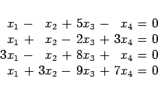

Inhalt Index DeskTop Bronstein

 Computeralgebrasysteme Anwendungen von Computeralgebrasystemen Elemente der linearen Algebra Maple
Computeralgebrasysteme Anwendungen von Computeralgebrasystemen Elemente der linearen Algebra Maple


Zur Behandlung linearer Gleichungssysteme stellt Maple spezielle Operationen bereit, die im Paket für linare Algebra enthalten sind. Speziell handelt es sich um . Das lineare Gleichungssystem liegt in der Form
| (20.70) |
vor, wobei A seine Matrix bezeichnet und c den Vektor der rechten Seite des Gleichungssystems.
Besitzt das System keine Lösung, dann wird die Null-Sequenz zurückgegeben. Hat das System mehrere linear unabhängige Lösungen, so werden diese in Parameterdarstellung wiedergegeben.
Die Operation findet eine Basis im Nullraum der Matrix A, der für eine singuläre Matrix von Null verschieden ist.
Für die Lösung von Gleichungssystemen können auch die Operationen der Matrixmultiplikation und die Bestimmung von inversen Matrizen benutzt werden.
| Beispiel A |
|
Es wird das Beispiel aus Abschnitt Triviale Lösung und Fundamentalsystem des homogenen Systems 
|
Für den allgemeinen Fall stellt Maple Operationen zur Anwendung des GAUSSschen Algorithmus zur Verfügung, die in der folgenden Tabelle aufgeführt sind.
| erzeugt aus A durch Addition von Vielfachen der i-ten Zeile zu allen anderen Zeilen eine Matrix, deren j-te Spalte außer Aij aus Nullen besteht | |
| erzeugt die durch Zeilenpivotisierung entstehende GAUSSsche Dreiecksmatrix. Die Matrixelemente müssen rationale Zahlen sein | |
| erzeugt eine Diagonalmatrix nach dem GAUSS-JORDAN-Verfahren, die Matrixelemente können Gleitpunktzahlen sein | |
| erzeugt die Matrix, die durch Anfügen einer Spalte (gegeben durch den Vektor u) aus A entsteht |
Hat man ein Gleichungssystem mit gleicher Anzahl von Gleichungen und Unbekannten sowie nichtsingulärer Matrix, so löst man das System mit .
| Beispiel B |
|
Es soll das System aus Kapitel Numerische Mathematik, Abschnitt GAUSS-SEIDEL-Verfahren |
| Beispiel C |
|
Es soll das inhomogene Gleichungssystem des Beispiels B aus Abschnitt Allgemeine Regel für das inhomogene System  |